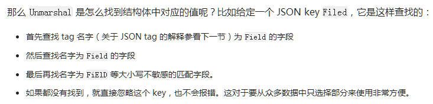
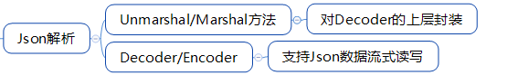
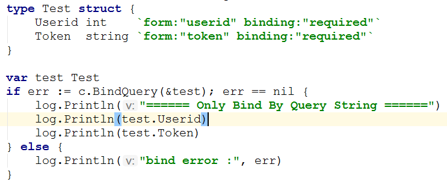

json操作
json算是比较好理解的组织结构方式了，现在RESTful那一套基本也是使用json来作为传输的数据格式了。
json库
我使用的是https://github.com/json-iterator/go，号称是非常快的，与Java的库类似。
还有一些其他的，摘自json-iterator/go。
| ns/op | allocation bytes | allocation times | |
|---|---|---|---|
| std decode | 35510 ns/op | 1960 B/op | 99 allocs/op |
| easyjson decode | 8499 ns/op | 160 B/op | 4 allocs/op |
| jsoniter decode | 5623 ns/op | 160 B/op | 3 allocs/op |
| std encode | 2213 ns/op | 712 B/op | 5 allocs/op |
| easyjson encode | 883 ns/op | 576 B/op | 3 allocs/op |
| jsoniter encode | 837 ns/op | 384 B/op | 4 allocs/op |
当然，这是开发者提供的，golang json库还有很多，性能差距感觉不会是最影响项目的因素，若是代码本身出了问题，那不是单单是一个好库能够解决的。
json格式

json 解析
库是怎么找到结构体对应的字段进行解析的呢？

json的tag是库用来响应使用者提前预设的操作的，用来控制库的编码解码操作。

我常用到的tag：
1 | type Message struct { |
使用omitempty，如果该字段为nil或0值（数字0,字符串"",空数组[]等），则打包的JSON结果不会有这个字段。
golang官方库中其实没有对“required”字段的支持，这个字段表示被标识的字段没有接受到值则报错（数字0,字符串"",空数组[]等也会报错）。
使用web gin有这个tag，

我还查到过一个很有意思的解决字段是否被传递的方法：
若需要使用encoding/json来检查缺少的字段，则必须使用指针来区分missing/null和zero值：
https://stackoverflow.com/questions/19633763/unmarshaling-json-in-golang-required-field
序列化美化json数据
json.MarshalIndent(data, "", " ")将会使用四个空格进行缩进。
本文标题：json操作
文章作者：小师
发布时间：2018-09-14
最后更新：2022-04-07
原始链接：chunlife.top/2018/09/14/json操作/
版权声明：本站所有文章均采用知识共享署名4.0国际许可协议进行许可